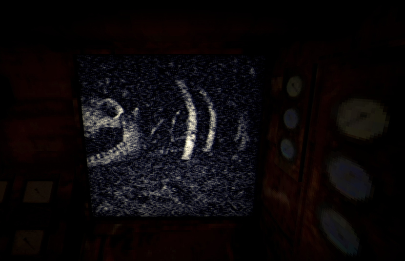

"Iron Lung: The Hidden Game" - An In-Depth Review
Allow me to introduce you to a hidden gem in the world of indie horror games - "Iron Lung." This game has captivated me like few others in the genre, and in this review, I'll delve into why it's a standout experience.
The first thing that sets "Iron Lung" apart is its unique approach to gameplay. You find yourself confined within the claustrophobic confines of a submarine, tasked with the mission of locating elusive artifacts. However, don't expect a leisurely stroll through the deep blue sea; this game is as challenging as it is gripping. On your initial attempt, chances are you'll meet an untimely demise. Fortunately, I had the benefit of a friend watching me play, and together we unraveled its mysteries.
Navigating the submarine is an exercise in itself. You're provided with a map, but it won't hold your hand. Instead, you must rely on submarine coordinates to pinpoint your location. The camera aboard the sub is your only window to the world outside, and it's far from perfect, offering a pixelated, black-and-white view. This adds a layer of tension, as you're often navigating blind, relying solely on your instincts and wits.
Your primary objective in "Iron Lung" is to discover and photograph the elusive artifacts. Once you've accomplished this, you've essentially fulfilled the game's objectives. Yet, there's more to the experience than meets the eye. The submarine houses an archaic computer in the back that you can consult for answers and delve deeper into the game's lore. It's worth noting that you won't be exploring the Earth's oceans but rather the crimson seas of a distant moon. According to the game's narrative, an unexplainable calamity erased Earth and all other celestial bodies from existence. Humanity is on the brink of extinction, and you're one of the daring few willing to explore the depths of this eerie crimson ocean, fully aware that the risks are colossal and the rewards uncertain.

As you reach the game's conclusion, you're left with a multitude of questions. What exactly happened? What's the backstory of this haunting universe? Thankfully, answers are on the horizon. A movie adaptation of "Iron Lung" is currently in production, with none other than Dave Szymanski, the game's creator, at the helm. And to sweeten the deal, Markiplier, the renowned YouTuber with over 10 million subscribers, is also involved, ensuring that fans of "Iron Lung" will soon have their appetite for answers satisfied.
In conclusion, "Iron Lung: The Hidden Game" is a masterful blend of horror and suspense. Its unique gameplay mechanics, unsettling atmosphere, and intriguing narrative make it a standout title in the world of indie horror gaming. As you dive into the crimson abyss, you'll be left pondering its mysteries long after the game ends, eagerly awaiting the cinematic journey that promises to shed light on this enigmatic universe.
An audio from Iron Lung